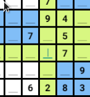
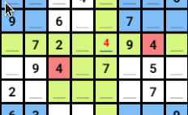

El sudoku és un joc d'entreteniment que perment reforçar les habilitats mentals.

Al seleccionar una fila s'et marcarà a quina fila, columna i quadre estàs
Els nombres vàlids són del 1 a l 9.
Les normes d'aquest joc diuen que perque estigui bé un numero no pot coincidir amb cap de la fila ni de la columna ni del recuadre de 9 celes.

Si t'equivoques no pateixis, prova amb un altre número, però vigila
si no ho penses bé després hauràs de tornar a començar.